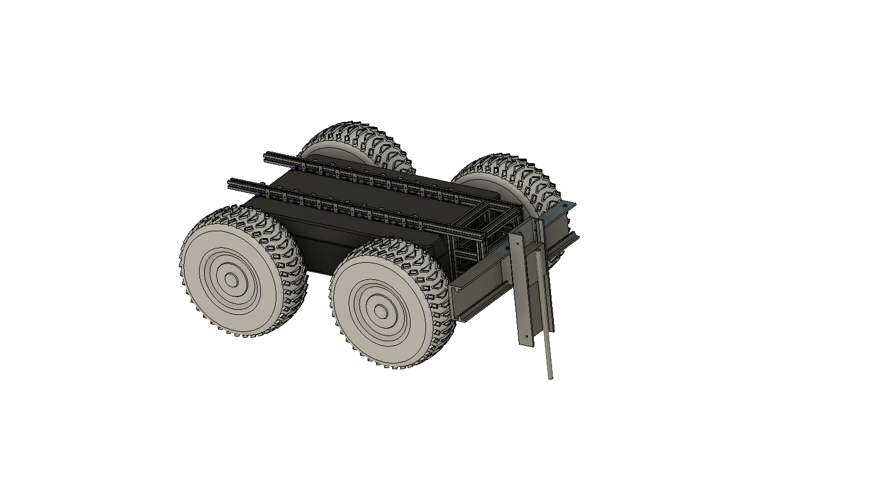
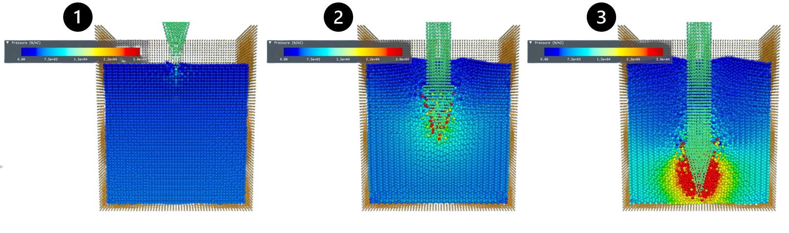
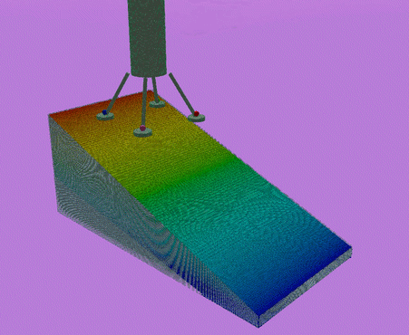
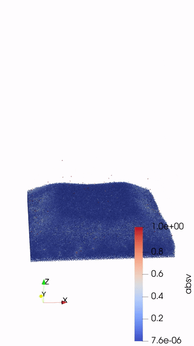
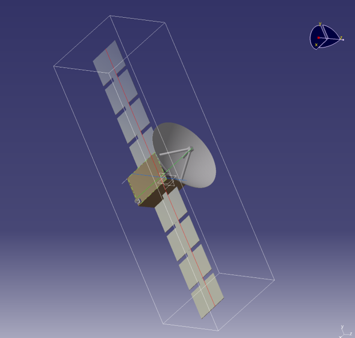
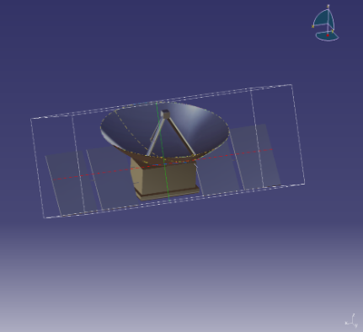
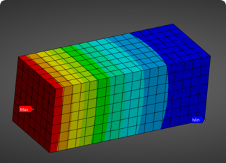
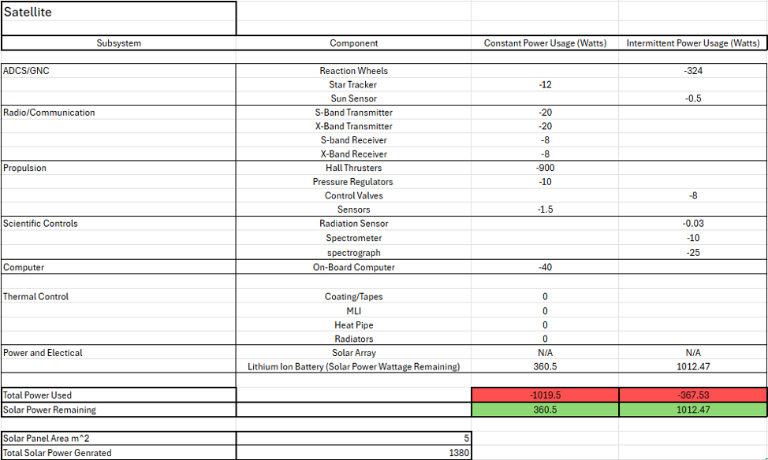

Projects
Selected research and engineering projects focused on space robotics hardware, physics-based simulation, terramechanics, mechanical integration, and lunar systems.
Rover Payload for Lunar Regolith Cone Penetration Testing
Co-developed a rover-mounted cone penetration testing payload for lunar trafficability research, supporting payload concept development, hardware planning, 3D printing, assembly, simulation data analysis, test verification, and rover integration.
Payload and Rover Test
Rover-mounted payload test showing the cone penetration testing system integrated with the rover platform.

Rover Payload CAD Concept
CAD concept used to plan the rover-mounted payload layout, component placement, and integration approach.

Payload Fabrication
3D printing workflow used to fabricate payload components and support rapid hardware iteration.

CRM Simulation Visual
Continuum Representation Method simulation visual used to study terrain response during cone penetration.
Lunar Lander Touchdown Dynamics
Simulated lunar lander touchdown dynamics on deformable regolith to study sinkage, slip, slope effects, yaw orientation, and lander design parameters.

Sloped Terrain Touchdown
Lander touchdown simulation on a 20° slope with a 40° yaw orientation using LHS-1 lunar regolith simulant.

No-Footpad Impact Study
No-footpad lander simulation used to study impact behavior and design parameters during touchdown.

Large Lander Configuration
Large lander touchdown case used to compare terrain response, contact behavior, and lander-scale effects.

Small Lander Configuration
Small lander touchdown case used to compare sinkage, contact response, and scale effects against the larger lander.
L-ARCS Lunar Relay Satellite & South Pole Ground Station
Led the mission concept, goals, and system objectives for a lunar relay satellite and South Pole ground station designed to support persistent communications for astronauts and surface assets during lunar South Pole operations.

Relay Satellite CAD (CATIA V5)
CAD model of the lunar relay satellite, including spacecraft structure, antenna layout, and deployable solar array concept.

South Pole Ground Station CAD (CATIA V5)
Fixed lunar surface communications station concept designed to support astronaut, rover, lander, and surface asset connectivity.

Satellite Bus Thermal Analysis
Thermal analysis used to evaluate satellite bus temperature behavior and support thermal control design decisions.

Satellite Power Budget
Power budget used to estimate subsystem power demand, solar array generation, and available spacecraft power margin.
Mars Landing Site Estimation
Developed a Python-based workflow to process Mars terrain maps and identify candidate landing sites using slope and elevation constraints.
.png)
Constraint-Based Landing Site Selection
Landing-site candidates were filtered using slope and elevation constraints.

Terrain Layer Processing
Image, elevation, and slope layers were used to evaluate terrain safety.
.png)
Jezero Crater 3D Terrain Model
3D terrain model used to inspect elevation changes and local surface features.